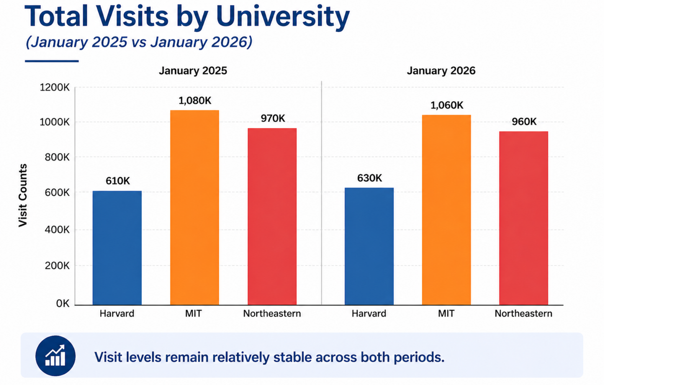
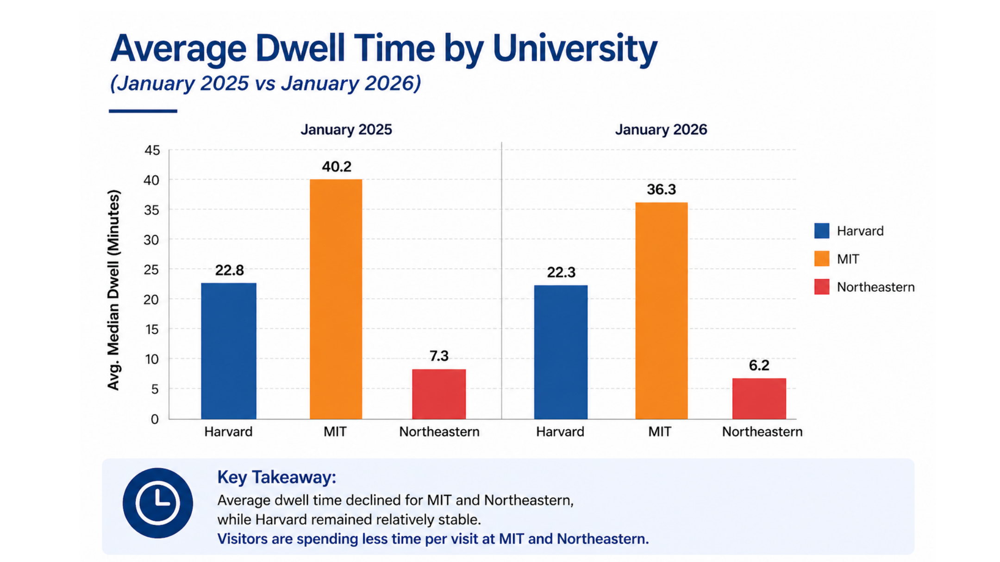
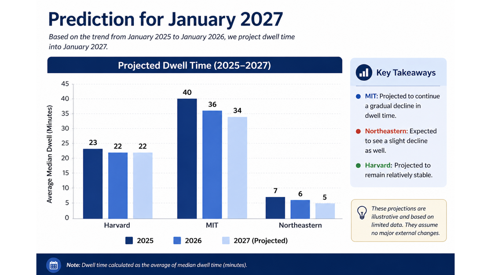

Mobility Patterns Around Universities
Comparing visitor activity and time spent around Harvard, MIT and Northeastern between January 2025 and January 2026.
Research question
To what extent did mobility patterns and visitor engagement change between January 2025 and January 2026 across selected university areas?
The analysis examined total visit counts and average dwell time in geographic areas around three universities, using anonymized, aggregated mobile-device mobility data provided by Advan.
Data and analytical approach
Aggregated metrics were compared for January 1–31, 2025 and January 1–31, 2026. The team used comparative visualizations to assess whether changes in visitor volumes were accompanied by changes in time spent per visit.
Locations: Harvard University, Massachusetts Institute of Technology (MIT), and Northeastern University.
Finding 1: Visits were relatively stable
| University area | Jan 2025 | Jan 2026 | Change |
|---|---|---|---|
| Harvard | 610K | 630K | +20K (+3.3%) |
| MIT | 1,080K | 1,060K | −20K (−1.9%) |
| Northeastern | 970K | 960K | −10K (−1.0%) |

All three locations experienced only small year-over-year changes in visit counts. This suggests overall visitor volume was fairly consistent across the two January periods.
Finding 2: Time spent per visit fell at two universities
| University area | Jan 2025 | Jan 2026 | Change |
|---|---|---|---|
| Harvard | 22.8 min | 22.3 min | −0.5 min |
| MIT | 40.2 min | 36.3 min | −3.9 min |
| Northeastern | 7.3 min | 6.2 min | −1.1 min |

While Harvard's dwell time was relatively stable, average dwell time decreased at MIT and Northeastern. This is the study's central insight: similar visit counts do not necessarily imply similar visitor engagement.
Exploratory outlook for January 2027
The presentation also offered illustrative dwell-time projections based on the observed direction of change between 2025 and 2026. These are not validated forecasts and should not be interpreted as measured 2027 outcomes.

Interpretation and limitations
The observed patterns are consistent with a shift in time spent per visit at MIT and Northeastern, rather than a large change in total visitor activity. The study cannot identify the reasons for these differences.
Team contribution and portfolio context
This project was developed collaboratively by Rowena Sandy and Nomvelo Shoko for an Information Visualization course. The original presentation includes the data comparison, visualizations, conclusions and limitations. Individual responsibilities are not specified in the source presentation, so no exclusive contribution is claimed here.
Source: Mobility Patterns Around Universities: January 2025 vs January 2026, 10-slide group presentation. Visualizations above are reproduced from that presentation.
← Back to all projects